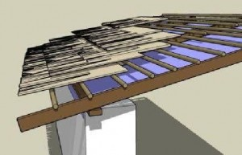

Haitian Wisdom 1
HAITIAN WISDOM FOR AID BUILDINGS
This study relies heavily on the photographs and master’s thesis of Architect Christine Neptune and has been greatly assisted by the help of others who know Haitian buildings so much better than I do, including:
Anthropologist Jay D. Edwards, Director of the Fred B. Kniffen Cultural Resources Lab, Dept. of Geography and
Anthropology , Louisiana State University, Baton Rouge, LA
Architect Fred Mangones and civil engineer Marcel Neptune
Legrace Benson of the Arts of Haiti Research Project
Elizabeth Briere of SUNY Albany
It was begun because of Owen Geiger and Kelly Hart‘s dedication to providing culturally appropriate building aid to those in need through www.earthbagbuilding.com and www.earthbagstructures.com
Thanks also to my friend Leslye Bell and my ever patient family
COPYRIGHT 2010
This work can be used according the following Creative Commons License:
Attribution Non-commercial 3.0
For more information see http://creativecommons.org/licenses/by-nc/3.0
CHAPTER 1: SITE PLANNING
REBUILD BELOVED LANDSCAPES
…it is to a comfortable vernacular that their residents wish to return. This implies a number of patterns which are too often overlooked and ignored…i
When rebuilding involves groups of buildings, it too easily destroys all sense of neighborhood. Haitians have built communities brilliantly adapted to their climate and society. Don’t replace that with sterile and artificial new districts.
A view of Delmas
Even more so, residents of a disturbed area desire the built environment to embody their history, social networks, and values. Traditional communities are combinations of buildings that have developed slowly from the values and knowledge of the local people. The signals and symbols of social status or other meaning may seem subtle to outsiders, but they are obvious to residents.
Neighborhoods look messier than what planners would choose. ‘That very variability of the vernacular becomes one of the essential components of “place.”ii This kind of ‘variety, whimsy and surprise’only results from the efforts of many local artists, gradually customizing buildings and yards to the needs of individual families.
Repeated elements and consistent spacing (like set-back distance from the street and spacing between buildings) define a shared image of the community. Existing vernacular areas may seem random to designers from Anglo or European cultures. But they often display a brilliant use of appropriate space and sheltering for transitions from the private space of the stoop, to informal neighborhood gathering spaces like public water supplies, to the more public market places.
Try to understand the social impact of existing spaces. Their subtle gradation of use and implied ownership of outdoor spaces enables the social fabric of a community. Women, in particular, may escape isolation in their homes only in their settings for daily chores. The market and public water supply enable women to interact. In some regions improvements like private water supplies have been rejected because they would destroy important settings for neighborhood interaction.
Involve local people in developing and reviewing plans at every stage. Only ‘improve’ streets and individual lot divisions in ways that local residents request or become enthusiastic about.
ENABLE LAND OWNERSHIP
80% of real estate assets in Haiti are held without legal title.iii
Perhaps the greatest limitation for Haitian building is the uncertainty about land ownership.
The enslaved ancestors of most Haitians never owned their land, but did have rights to their houses. These were built to be easily disassembled, if not moved. When the colonists were overthrown in 1804, many former slaves left the plantation land and squatted on parcels in the hills. A system of land ownership somewhere between that native to either France or West Africa evolved.
African land often belongs to the community leader. It can be claimed on the basis of farming it. French inheritance law divides land between al the children. In Haiti over the years many plots of land have been divided until they have become too small to support a small family. Many families share the land together, or sell it to one child before the parent’s death.
But houses were not usually handed down from parents to children in the past. In the Dominican Republic an architecture using local stone developed, but Haitians continued to use less permanent materials for their houses until recently.
Land can be bought and sold in Haiti, but there is a waiting period of years to be certain no one else can claim it. With high levels of illiteracy, many people may not understand legal right to their land if they have a deed. This has been complicated by the fact that government officials seize and redistribute land to their supporters. Today many Haitians do not want buildings that look more expensive than those of their neighbors, for fear of attracting negative attention.
Temporary housing is often planned for displaced people after a natural disaster. It frequently becomes transitional and finally permanent when other solutions never develop. This results in more people claiming land without true legal title.
Temporary housing must be laid out in ways that will be appropriate if the use becomes permanent. Follow models of land subdivision that make sense for the culture and local area.
Develop plans that can work in a variety of land ownership options, whether by formal land ownership or informal use. Lobby for land law reform.
PROVIDE SETTINGS FOR COMMUNITY
The house and its surroundings, the architecture, the furniture, and the garden reflect the Caribbean sensibility and the order of society.iv
What Haitians call ‘home’ is the yard or compound. This includes both buildings and a carefully maintained and swept inhabited areav. One calls out a greeting to ask permission to enter at the edge of the lawn or dirt yard. One says farewell and receives a parting gift there also on leaving. No dwelling is completewithout some form of useful and sheltering yard, and yards represent many layers of symbolic meaning.
The Haitian yard is shaped by a very African lifestyle.vi Although rural houses lack the compound walls so basic in Africa, in all other respects they resemble those of their African ancestors. A deliberately grown thorny hedge replaces the wall. The yard includes separate small dwellings, outdoor kitchens, drying structures, silos, and monuments for graves. Although the French-derived legal system divides inherited property, Haitians often follow the African custom of sharing the family land.
Often Haitians settle on the land of the man’s parents. Within this safe, bounded space, children have multiple caregivers, and group members take care of each others’
needs.vii ‘Home’ is a term that means relationship as well as place, and includes close friends as well as extended families. The words for home and community are close, and ‘lakou’ can mean the network of people that are involved in the characteristically Haitian system of group living and sharing responsibility, as well as the compound or yard they share.
Haitian communities often consist of a dozen or more of these extended family groups. Topographic maps, like the detail of Gonaives above, clearly show scattered clusters of houses or ‘cours’ that are the basis of Haitian daily life.
Even in modern communities this sense of lakou is desired. The townhouses in the suburb of Thomassin, shown at right (and the photo on the previous page), are very popular because they overlook a quiet street with shared space. The interior roads are quiet enough that children play in them. A peripheral wall and gates at the entrance roads keep this small community safe. The central triangle includes a small playground and some plantings. Each of the 22 front rooms overlooks the street.
An opening at ground level serves as a carport but is cleared out to use in the frequent neighborhood parties.
The practice of coumbite or shared labor shaped and still influences Haitian
residential groups. The families of at least 12 men will usually live close enough to help each other work in their fields or build. ‘The power of the Haitian social system was the great interconnection of mutual responsibility among the members of extended families and villages, communities- ‘Lakou’ of around 500 people. ‘viii
Groups of new shelters or dwellings must be allowed to form clusters that express the underlying or developing social networks of the residents.
The order must be allowed to be social rather than geometric.
BUILD OUTDOOR SPACES:
The architecture of the Caribbean is first and foremost an architecture for life out-of-doors. Daily activities take place in spaces that are mostly outside the framework of the house itself. And even the framework is open to the outdoors, offering protection only from the sun and rain.ix
The true Haitian living room
In Haiti most of life happens outside, in the fresh air and cooling breezes. A small house just serves as storage, shelter from rain, and a place to sleep.
The space defined by the house’s shadow may be as important as any room within, because it is the setting for adult work as well as child care.
In cities most household chores are done outside, including washing and drying clothes. In the country the yard also includes space for flowering bushes, herbs, and a few vegetables. Animals are penned and cared for. Food is dried and stored in a roofed silo that is raised above the ground. These uses are basic and must be provided appropriate space that is large enough and comfortable enough for work.
|
A carpenter’s workshop under an awning |
An outside service area |
In both city and country cooking is kept out of the house. This wisely keeps both smoke and heat out of the interior. The majority of Haitians use charcoal to cook, and do this on the ground. They usually locate a lean-to for cooking across the yard from the dwelling, downwind from the house. This area may also be used for smelly tasks like slaughtering animals or singing feathers.
Haitians prefer two separate kitchens. The majority of cooking is done outside, butfood storage must be located near the dining area of the salle. In better houses a sort of kitchenette or butler’s pantry is located inside.
Even modern additions may separate the kitchen and toilet by a hall or porch from themain salle or other rooms used in thedaytime. Simple bucket-flush type toilets,which require less water than a porcelainwater closet, may also be smellier. Often atoilet or latrine is located in a separate leanto, perhaps joined to a simple paved andscreened wash area.
The basement of the house or a part of the yard usually includes a cistern to store rainwater for droughts or the frequent power outages when well pumps can’t be run.
Perhaps the most important part of the yard for many Haitians, a solid masonry tomb with a sheltering roof may form a setting for ancestor veneration. Before stone masonry was used on houses, it was customary for tombs.
Often the tomb looks much more sophisticated than the house. No matter what happens to the land, the family always retains the right to return to their tombs.
Outdoor areas must be carefully designed to house outbuildings for many functions.
AIM BUILDINGS FOR COMFORT
The architect of the tropics must… battle against heat, strong solar radiation, high levels of air humidityand torrential rainfall and, in addition, develop methods of building that offer users comfortable spaceswithout requiring mechanical cooling systems.x
The climate of Haiti’s cities is mostly warm, humid, and usually sunny. Located along the coastline, they usually receive about 8 hours of sun every day, with frequent intense rain in the late afternoon. By late evening when offshore breezes pick up, the air usually cools and becomes less muggy.
Haiti receives trade winds out of the northeast, but the northeastern slopes of the mountain ranges receive most of the humidity they carry. Rainfall varies from a very wet 142 inches (360 cm) per year in the southwest, to a low on the gulf side of the northern peninsula of only 24 inches (60 cm) per year. This is a rainfall amount similar to the US northern plains, where prairie replaces forest cover.
Mornings are comfortable in shady, breezy locations. Shade is preferred all day long. Large windows and tall doors are needed to allow breezes to blow through indoor spaces. Enclosed buildings are uncomfortable much of the time, particularly when used by groups, because the humidity from people breathing out and sweating builds up.
The graph abovexi combines monthly average high and low temperatures with average humidity to show when people in well ventilated buildings or outside in the shade can be comfortable. Afternoons from March to October routinely become too hot and humid. Breezes can’t cool people off enough when the air is too humid.
Acclimatized people who are native to Haiti or long-term residents may be comfortable several degrees hotter than the chart shows. But because this chart is based on average temperature, there will be many days that become much hotter than these average temperatures. In general, the months of June to September frequently become quite uncomfortable for everyone most afternoons.
Although Haiti occupies just a portion of an island, it contains several different climatic zones. Hinche in the Central Plateau (750 feet elevation) has a climate similar to Port au Prince, but higher elevations are comfortable more of the year.
In the mountains, temperatures become cool at night and even hot days do not become too muggy. Kenscoff is a town of 4700 feet elevation (about 1400 m) that is south of Port au Prince.
Average temperatures there range from lows of 50 degrees F (about 10 degrees C) to highs around 75 degrees F (24 C).
It is more difficult to cool buildings naturally than to warm them. The advice that follows is mostly directed towards sites below 5000 feet elevation (1500 m) where the climate is hottest. Since many parts of Haiti are steep, check what the elevation of a project site is.
Watch the winds: In the hottest areas it may be most important to aim buildings to catch the breeze. Locate porches on the breezy sides of the building. Be sure that local people confirm what the wind direction is on the site in different seasons and weather.
Buildings must also be designed to survive the strongest storm winds. Most Haitian houses have very little roof overhang. Some have porches that are designed to be blown off in storms without damaging the house. Because hurricanes usually come from the east, west-facing hillsides may be more protected from winds.
Keep the sun off: In the hotter areas near sea level, it is important to keep the sun from heating up houses or porch pavements. Trees and bushes nearby can keep a building and its environment cooler both by shading and by the natural process of evaporative cooling. Shade is also important to allow work outside.
Houses in the hot areas should be arranged with short sides facing straight east and west, if possible. This way the afternoon sun can’t overheat them too much.
The mid-day sun is high enough that roof overhangs or porches can shade a building well. But in the afternoon, at the hottest part of the day the sun is low in the sky and reaches building walls. If the west-facing walls are short, little of the building receives this extra heat.
The entrance porch or galerie should not be on the west side of a building in the lower, hotter areas. Michael Vlach studied the layouts of traditional buildings in and near Port au Prince that faced their narrow side and entry porch to the street or access path. Review of his plans show that fewer buildings had the entrance facing west than any of the other directions. The most common directions for these entry porches in Port au Prince were northern and eastern, which provides the most shade. Among the smallest houses, where the residents have only a small porch and few options to choose from, west facing doors or porches were very seldom built.xii
Traditional Haitian building materials also contributed to comfort. The simplest houses made of thatch or matting don’t become too hot. Thatch acts as a very effective insulator to keep the midday heat out of buildings. Plaster applied on wattle and daub will warm up in the sun, but does not hold as much heat as concrete or brick.
Modern concrete block buildings often overheat and stay hot into the evening. Roofs and building walls covered with metal may also become too hot for comfort. They will need good insulation and large openings to allow good ventilation if they are to be placed in sunny locations.
Let the sun in: To make a house and porch pleasant in the cooler areas, eastern doors and porches are best. Sun on walls can warm the porch and open doorways during the cool mornings. South-facing porches will also make them warmer than a porch on the north side of a building.
Aim and shape buildings and outdoor spaces for comfort in the local climate.
ALLOW ENCLOSURE
… property wall(s) in Haiti serves many purposes… [to] keep things out: intruders, vehicular and pedestrian traffic; …keep things in: animals, children and privacy. They frame the yard and house, decorate and formalize the entrance.xiii
Living hedges of thorny plants 5 feet high (1.5 m) usually define rural lakous. Village houses may not include walls because the entire village may be considered as belonging to the same lakou. In cities and suburbs walls have been multiplying in Haiti, because economic and political problems increase crime in these crowded and more anonymous areas.
Solid walls are often not needed. Metal fencing or perforated block patterns allow air to move through barriers.
Even temporary shelters can be located in arrangements that let their walls form enclosures.
Allow space for residents to develop formal or informal barriers around clusters.
CREATE A FUTURE TOGETHER
“It was good to do tests and experiment together before starting the real construction… everybody learnt a lot from each other. I learned how to build strong walls, how to use measurement tools, and the foreigners learned that the best mixing machines are water buffalos.” (comment of a local contractor about a school project in Bangladeshxiv
Aid buildings can have a secondary goal of introducing an improved technology to people with limited resources. In addition to housing a family, a building may also be able to introduce to the community an improved way to provide for their own needs. For this to happen, aid housing must seem familiar, use some of the culture’s symbolic forms in appropriate ways, and incorporate modest changes to building techniques.
Although the majority of Haitians are farmers, they are called moun andeyo ‘people on the outside’. Prizing their independence above everything, they usually see any ideas coming from the outside world as intrusive. Their deep mistrust is not often won over, so most ‘development projects are left to decay as soon as foreign experts are gone’.xv
Building for aid should involve a lot of listening to the recipients and allowing them to shape the results. The designers and organizers must want to learn from the locals.
CHAPTER 2: HOUSING
LEARN FROM THE PAST
Providing housing involves much more than just building houses… [it involves] a whole system of spaces which a family needs.i
Many past aid projects have failed dismally. Sometimes shelters were built too late. Sometimes they were unsuited to the climate- too hot or cold to be useful.
Other buildings looked traditional but did not allow families the delicate balance of shared and private space that their culture required. Buildings that do not allow people to live in their usual social groups are not helpful. They force the poor into a ‘desperate effort of … trying to live in a context totally unrelated to their needs.’ii
Sometimes aid buildings were suitable for the climate and social groups, but did not feel like a home to the recipients. Rebuilding after hurricane Katrina had these problems. ‘Despite all of the experiments… in New Orleans, nothing which the architects and engineers have suggested or built has been accepted by the people of the city. This is precisely because they do not understand the ground rules of spatial architecture, form classes, and physical patterns which are embedded in that culture…’iii New types of lots, site plans, or buildings reject important community values. This can be perceived as an insult to the neighbors or a great loss of status to the recipients.
Aid housing for group-oriented societies (like those in most warm regions) must limit innovations.
USE APPROPRIATE MATERIALS
Much of the loss of life in the recent earthquake was related to the misuse of reinforced concrete. A material whose strengths can either be seen or intuitively understood is a better fit for the Haitian culture (as well as the cultures of many other parts of the developing world.)
Haiti is a country with a strong ethic of sharing and weak financial resources. Haitians place great value on relationships. They are a generous people who care for each other in practical ways. But cement and steel have become so precious that ordinary builders feel wrong to hoard them and not share.
Most Haitians are more oral than literate. The particular dangers of reinforced concrete arise from the mysterious technical standards it requires. Working with it on a job site either teaches a builder that he knows nothing and cannot build for himself, or it gives him a false sense that a rule-of-thumb understanding is good enough. Since most construction is done by building owners in a gradual, additive process, few professionals ever give advice.
Reinforced concrete works for commercial and institutional buildings when carefully supervised. One Haitianengineer whose many buildings weathered the recent quakes always inspected the steel just before watching the cement poured.iv Simpler, more obvious techniques are needed for these small projects, not more regulation.
TRADITIONAL MATERIALS
Pegged and braced wood frames with infill were originally used for single story construction in Haiti. They weather earthquakes well because they are wel -connected and flexible. Even if infill is brick or stone, it can be made earthquake proof by adding reinforcing and containing it in wire mesh before plastering. But in current conditions, these materials are too expensive for most people to use.
Earth and stone have formed the basis for inexpensive construction inmany parts of the world for thousands of years. But Haiti’s seismic risk and damp climate reduces the number of appropriate ways to usethem. Adobe requires a drier climate to allow drying of blocks. Stone walls require significant amounts of reinforcing steel and Portland cement to be safe in earthquakes. Rubble or stone fill in gabions has been suggested for temporary shelters, but would create very thick walls.
Stone walls require significant amounts of reinforcing steel and Portland cement to be safe in earthquakes. Rubble or stone fill in gabions has been suggested for temporary shelters, but would create very thick walls.
The common construction in the countryside involves woven wall panels between earthfast (inserted in the ground) poles. These structures are usually safe in quakes. They are subject to termite damage, and traditionally must be frequently replaced. But they allow individuals to simply build their own homes.
traditional woven panel construction
The small diameter unfinished wood poles used in this style of building are stronger than similar size trimmed lumber. These may be more affordable because they require less use of power tools and may be harvested from smaller trees.
For the present, wood is too precious and scarce for most needed construction in Haiti. Coppicing existing trees (partial cutting that allows existing roots to regrow) could help to increase wood resources in a few years. Use of solar stoves could also leave more wood available for building. Haiti has few hours of cloud cover, on aferage. But if solar cookers require different cooking techniques, they may not be generally accepted.
Bamboo is grown and used in the Domican Republic. It can grow to maturity in as little as 3 years, and families could plan for expansion or improvements by planting a fencerow with bamboo. But bamboo’s different fastening and insect treatment needs may keep it from general acceptance.
Tradtional thatch in Haiti often uses vetiver for rodent repellant qualities. Tin roofing is preferred for its betterwaterproofing and longer life.
NEW TECHNIQUES OR NEW MATERIALS
Material innovations that Haitians feel improve known techniques may be more easily accepted than completely new ideas. No innovations, like the ones that follow, should be decided on until Haitians have seen and tried the processes out, and decided for themselves how practical or useful they might be.
For transitional or temporary housing, thatch might be very practical over a layer of tarp, as shown at right. Thatch uses more weak purlin framing that can be made of thinner poles. Tarps beneath can prevent leaking and will last longer if covered from sunlight.
Another possibility is magnesium cement on fabric or woven panels. Haitians weave lighter materials as well as the branches seen in wattle infill panels. Magnesium cement was used before modern Portland cement became more generally available. This type of cement bonds well with carbon-based fibers to make a thin structural panel if a coating is applied to woven material. It can form very thin structural panels because it has greater tensile and compressive strength than Portland cement. Although magnesium cement costs more per bag than Portland cement, much less is used because it can be just painted on.
One problem with thin roofs, whether of corrugated metal, Portland cement, or some new material, is that they overheat easily. A minor addition that could make metal buildings much more comfortable is to add lightweight insulation material. Mats of reeds, flakes of thatch material, or partly filled grain bags of rice hulls or straw have been successfully used in different areas.
Cinva-ram press for CEBs
Compressed earth blocks (CEBs) can be contained for safety between reinforced concrete posts and beams. Rammed earth walls can be built in strong shapes to resist quake damage with careful wooden formwork.
Earthbags are overlapped like brick or cmu masonry
Perhaps the most likely new technique for Haitian rebuilding is earthbag, a simple process that doesn’t require wood forms or much added structure. It can be built with earth and little or no cement. This least expensive way to build with earth is also the simplest to learn, and flexes well in earthquakes.
Earthbag building of orphanage near Port au Prince, Haiti
Many aid organizations and peasant groups are beginning to use earthbag construction. Earthbag buildings, like traditional adobe, are created with simple rules of thumb. But they can be built quickly in a damp climate.
Overall earthbag is a labor intensive process using hand tools. Grain bags are filled with moist earth, stacked, tamped, and covered with plaster. Under roofs the bags dry into an improved adobe with tensile strength from the bag fabric, barbed wire, and mesh. This process works well for one-story buildings. In non-seismic areas it is used for two story buildings, but in Haiti might be best for one story or only a wood addition above.
Find out what alternatives are available in each place for rebuilding. Choose materials that Haitians can use in the ways that they feel are best.
REPEAT FAMILIAR SHAPES
Sameness in houses is a statement of similar ideals, of shared experiences and expectations. A house is both a personal and a cultural expression, at once home and habitat.v
The most important function of a building is not keeping rain out or things in, but is its meaning. The shapes, arrangements, and locations of houses carry potent meanings.
The general shapes of buildings are called form classes. Buildings in a single form class answer these questions in the same way:
Single or 2-story? Single or double-wide?
Do you enter at the gable or under the eaves?
Does the building face the road?
Where are porches located?
How steep is the roof?
Traditional variations on a single basic building type
But where rebuilding requires multiple new buildings in one area, it is important to include the right amount of variety as well as choose similar kinds of buildings. Neighborhoods that have developed naturally are ‘characterized by variation and individuality constructed around a few dominant architectural types and their numerous variants… These are augmented by unique individualistic “intrusions” and artistic elaboration. ’vi

Crowded housing in Papslam near Port au Prince, 2006
Traditional building shapes sometimes change with the advent of newmaterials. The poor will build almost flat roofs with metal to save on roof framing materials. But when given more resources, they may choose to build a ‘nicer’ house with the traditional roofline.
Show recipients sketches or photos of old and newer building shapes to find out what they prefer.
START SMALL:
Piti piti zwazo fe nich. Little by little the bird builds its nest.
Haitians houses usually start with 1 or 2 rooms and gradually grow. Because they are often simple, modular layouts, extra rooms are added when neighbors or relatives need a place to stay. ‘The house evolves naturally, according to the Haitian’s instinct, not in a deterministic manner.’vii In the villages or countryside rooms are added on to the side or rear. In more crowded cities, rooms are often added on top.
Each house is usually freestanding, and serves one couple. To make one’s hut (faire sa case) is to become grown up.viii A young man who is serious about a girl builds a separate house, usually on his father’s land. Young children, elderly widows, single neighbors may all eventually share rooms, but a house is not usually shared by several couples.
Small house near a tidal marsh
The traditional rural houses had rooms about 10’ wide, suited to smaller and less expensive roof framing materials. In cities where land was more expensive, they were often 12- 14’ wide.
If Haitians have a small waterproof and quake resistant building core, they can extend it with less waterproof additions that may be useful most of the time.
Small detached houses are more desirable than multi-family structures in Haiti.
CELEBRATE THE ENTRANCE:
Buildings became a background canvas for a composition in which thegarden is as precisely laid out as the house itself. Between these two domestic areas- extra muros and intra muros- the gallery is an organiclink, interior and exterior at the same time. It is not surprising that it is the decorative showplace of the house. The front porch in Haiti is the galerie. This is truly the center of family life. People sit and talk, watch and greet neighbors. The front room behind is usually built first, and always faces the street or access path.
Even if it is small, the galerie will usually be sheltered under a roof and raised slightly above the ground. If there is no raised stoop, there may be an edging of stones or bricks to show where this family space begins. In a village or city it may have a railing, grill, or open-work wall to provide more separation from the street and security for belongings.
Additional porches, verandahs, and second story balconies can also connect the inside with outside as well as expand the domestic living space. But the galerie provides clear signals of relationships, ownership and privacy. It serves as an important transition space to the interior of the house.ix‘For many, the threshold or the main doorway marks the limits beyond which the visitor may enter only by invitation.’xPeople appreciate gracious boundaries.
The galerie wall is often lavishly trimmed and painted. It may be sided in wood even if the rest of the house is built more simply. Around it may be decorative flowers, bushes and shells.
The only exception to this desire for a gracious entrance porch is in cities. Two-story buildings in cities often have a covered walkway in front of their door instead of a porch. As shown at right, they usually have a porch on the second level that serves as the galerie.
Every dwelling needs room for a pleasant entry porch that faces the road or access path.
OPEN UP THE FRONT ROOM:
To be admitted inside a hut, speak Creole and be answered in Creole when one is a foreigner- this is a mark of trust.xi
In both of the most popular Haitian traditional house layouts, one or two doors from the galerie open into a more private multi-purpose room with a table. This practical salle is where the family eats, keeps utensils and food, writes, and listens to the radio. At night children may sleep there on mats on the floor.
A traditional kay front room has 3- 5 doors
In Haiti’s cities and low lying areas, old houses have high ceilings and many tall doors. Their breezy front room is only slightly moreenclosed than the galerie.
Many doors allow flexible room use and access from the yard where adults work and children play. The common double or French-type doors stand open all day but can be adjusted to provide shade when the sun is low. They are only closed tight for storms and at night.
In cooler country locations houses often have fewer and smaller openings. Small, dark houses may be remnants of traditions brought to Haiti by many West Africans.
Connect inside and out in ways that work for Haitians
KEEP BEDROOMS PRIVATE:
A new home for a family
The second room of a two room house is used as a bedroom. This bedroom or chambre will have fewer and smaller openings than the front room, more windows than doors. There may be a raised platform that serves as a large bed.
The wall between the salle and the chambre probably does not extend to the open roof, ending at the eaves line. It may be an openwork screen. But it defines an important boundary.
Bedrooms are considered very private. Haitians do not allow strangers into bedrooms. They welcome cousins, aunts, uncles, or neighbors to stay with them. But they prefer to use separate bedrooms for the girls and boys. People of the opposite sex do not enter someone else’s bedroom.
Families housing neighbors and relatives in need will feel strongly a need to provide enough gender-segregated bedrooms. Often two-room houses are expanded to provide more bedrooms. Haitians have houses with more bedrooms than other cultural groups of the same economic level in other parts of the Caribbean.
In emergency situations with extra people in families, plans should allow expansion for at least 2- 3 small bedrooms.
ADD OPENINGS AND STORAGE:
Wood shutters and French doors
Double door and window shutters may be stronger than single shutters. They use smal er lengths of wood.
Storage above the porch roof
In the simplest traditional houses neither doors nor shutters lock. They have latches on the inside. Although glassis not needed for windows, many Haitians want to close openings at night. Solid shutters work well to give a senseof safety, and to keep storm winds and rain out. Doors and shutters always openoutward so they cannot be blown open during hurricanes.
The only space that can be locked in a small house is often a soute or storage area above the ceiling of the galerie or entry porch. This warm and dry location serves well for farmers to store grain and other foods. It is accessed by a door in the gable end, and from inside the salle, which has no ceiling.
Allow tarps or shutters to close all openings. Provide at least one room with secure window grilles and a lockable door.
Wood decoration
FINISHING TOUCHES:
West Indians declare their love for their homes with the delicate frills and lacework that adorn galleries and interiors… [and have exteriors] brightened by sharp, lively colorsxii.
Traditional Haitian homes are more simple shapes than small homes in other parts of the Caribbean. Yet, despite a scarcity of resources, they have always been lavished with beautiful colors and patterns- ‘the gaiety, the fantasy and the exuberance of the African tradition.’xiii
Life may be simple, but it can be vibrant and beautiful.
CHAPTER 3: HAITIAN HOUSE TYPES
SOME HISTORY BEHIND HAITI’S HOUSES
Smaller houses are usually made in one of two different house styles that have a very different history and are more common in different parts of Haiti. One is built parallel to the road or path, and the other faces it end-on.
Although beginning with a seemingly slight difference, these housing styles are elaborated in different ways, and reflect very different use of space. A community may request one or the other. Find out how it fits their local conditions and their mind-set.
The house above is a small kay. It was an adaptation of West African earth dwellings to new materials and conditions in Haiti. Although used for slave shacks, it developed into an architecture of defiance, coming to symbolize pride and independence. This house type is most prevalent in southern Haiti, where many freed slaves first settled.
With the entrance on the narrow gable end, a kay works well on narrow city lots or in country compounds. It has been used for gracious homes in cities, elaborated by freed slaves long before Haiti’s liberation. Haitian immigrants brought the style to tidewater Louisiana, refining it into today’s shotgun houses.
Below is a Creole house. In colonial Haiti it developed from a predominantly Spanish house style adapted with some African influences to suit the tropical climate of the Caribbean.
Creole houses were the homes of manor owners and plantation managers. They were traditionally more common in the northern areas of Haiti which were slightly more open to European influence in Christophe’s kingdom.
Because the Creole house’s entrance is on the long side of the building, it requires slightly wider lots than the kay. It is less appropriate for city lots, but can be more easily developed into a larger building.
Let the past enrich new buildings.
THE KAY HOUSE:
The form of the house was a signal of difference and perhaps a statement of independence… The continuity of house types from a rural to an urban context and from a slave to an elite society indicates that architectural values operate at a very deep level. They remain in the unconscious mind in the midst of conscious attempts to change social preferences.i
This distinctive house style with African roots is very different from Anglo or European derived forms.
A kay (or caille, meaning house) has an entrance from the squarish porch on the narrow end, under a very distinctive extended gable roof. Both porch and gable end can be lavishly decorated, but the triangle form of the gable end is itself a strong visual element, signaling welcome to neighbors, and respect to the community. Located in consistent spacing near each other, their gable ends form a visual wall that defines the street. Giving a formal appearance to their community may be as important to Haitians as sheltering their family.
Ti-kay means small house (ti from petite). A kay can grow easily by becoming longer. Small room dimensions and its steep but narrow gable roof make it an inexpensive type of house to build.
Ti-kay in St. Michel line Highway 2
The kay is well adapted to hot climates. Because it is always one room wide it is a very well ventilated house type. Close spacing helps to keep sun off the house’s environs, and is also seen on rural farm compounds.
The kay was first built of pegged wood posts and beams. Vertical 4x4s or 3x4s occurred at corners and openings, with diagonal bracing between. Walls were plastered wattle or brick infill. Rural kays resisted quakes well, but were not usually strong enough to add a second story.
Kays are usually a line of 2-4 rooms, but can be up to 8 rooms long. Many also have porches added on one or both sides. One or at most two L rooms can be added on each side towards the rear, with a shed roof.

The most elaborate kays are built by adding L rooms and symmetrical porches on both sides. If much more indoor space is desired, a wider 2-story house (called a camelback) is sometimes added behind.
All of these traditional addition shapes maintain the important flow through ventilation of most rooms. Corner rooms are few and still have openings in two different wall s for adequate breezes for cooling.

Two-story kay with a side porch
In cities kays are also sometimes built double-wide, or as two-story townhouses. Recently, owners have begun adding cement block rooms behind and alongside kays, so that the original wood seems enclosed in a new masonry building.
|
A lavishly decorated north shore style house with side galerie |
Double width kay with dormers |
(sketches based on photos by Jay Edwards)
THE CREOLE HOUSE:
‘In tropical forest areas, galleries often symbolized authority and prestige and were a prominent feature of the great houses of many African chiefs and kings.’ii
The second kind of house, derived from Spanish plans, was used for plantation owners and overseers. The open, well-ventilated main room was influenced by African traditions, but the overall symmetry and the different proportions of its front room and bedrooms were European. In parts of Haiti this house type may still be envisioned as belonging to a powerful upper class.
The Creole house is built parallel to the road, and has a longer porch that stretches the length of the house. It can have more doors and windows from the galerie than the narrower kay allows. It may also have a hipped roof that is shaped to resist high winds.
This type of house is often raised several feet above ground level to better receive breezes, and the space beneath the house used for storage.
A house in Bas-Ravines near Cap-Hatien
The Creole house may start with a single room or a salle and one bedroom. But it usually ends up with a bedroom on each side. It grows by adding rooms onto its sides and rear. The central room remains open to the front and rear porches. This allows bedrooms at both sides to be ventilated through the central room.
A Creole house is more expensive for the same number of bedrooms than a kay, because of the additional porch areas required. The extra room in the rear porch may be used to house a stairway, and allow a second story adaptation more easily than the narrower kay layout.
A small Haitian house with a front porch and at least
one rear room
A Creole house in the late 1700s traditionally started with a salle 16 to 18’ long. The total length with twobedrooms could be 48 to 50’ by 16’ wide. Porches add another 6 or 7’ in width. This formed a building significantly larger than even an extended kay.Creole houses usually have smaller rooms, called cabinet, added to the rear of the bedrooms, with a rear porch between them. Sometimes a family will add cabinet in the front galerie area to provide more enclosed space. If the house is two-story, sometimes the upper level end balconies are enclosed as well.
Shed-roofed rooms added to the rear, and side porches
The largest types of Creole houses included generous porches on all sides. This is a very well ventilated layout for hot climates.
- A large colonial house in Port au Prince
GINGERBREAD AND EUROPEAN STYLES
The Kay and Creole styles are not the only authentic Haitian architecture. They may be the best precedents for aid rebuilding of dwellings, but some understanding of other styles is wise.
Haiti has some beautiful and unique commercial and institutional buildings. These included imported European steel buildings and masonry structures like Christophe’s Citadel and Palace. Also, at the end of the 19th century hotels and residences were built in a highly ornamented Haitian style now called Gingerbread.
A multi-story kay with enclosed balconies
MATERIAL INNOVATIONS
Recently cement construction has become popular to avoid rebuilding after storms and termite problems. Because of this cement houses are also viewed as superior and modern. Sometimes cement has enabled older forms to be used in different ways.
Concrete roofs in traditional shapes
Cement also enables the construction of larger buildings than traditional. The townhouses below right use an end-gable motif reminiscent of the kay, but in a much larger building.
Cement can also be used to create modern International Style buildings. Whether large or small, modern houses can be too hot for comfort during the humid rainy months if they lack generous sized openings for ventilation. Cement buildings of any style also tend to hold more heat than earth or wood. Roofs of cement would benefit greatly from insulation to prevent them staying hot each evening.